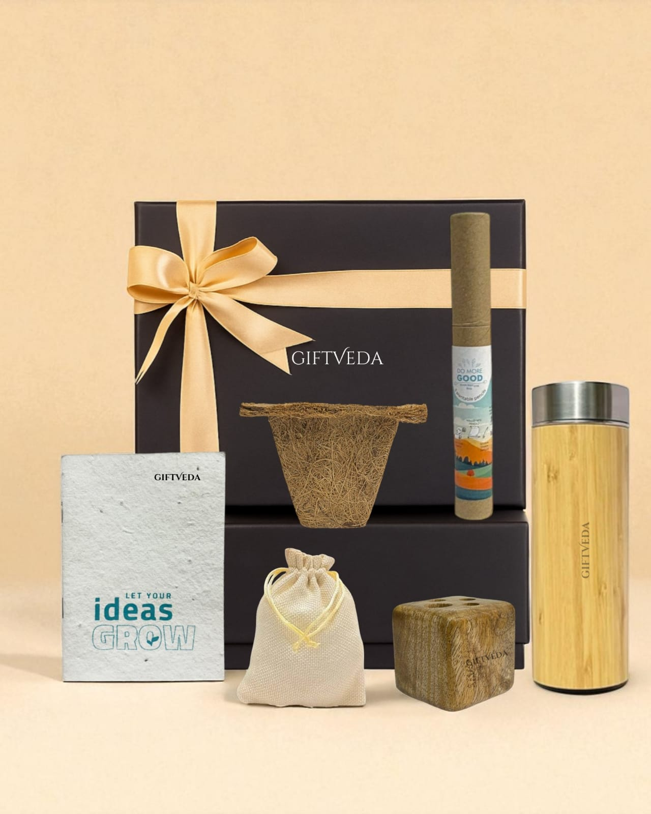
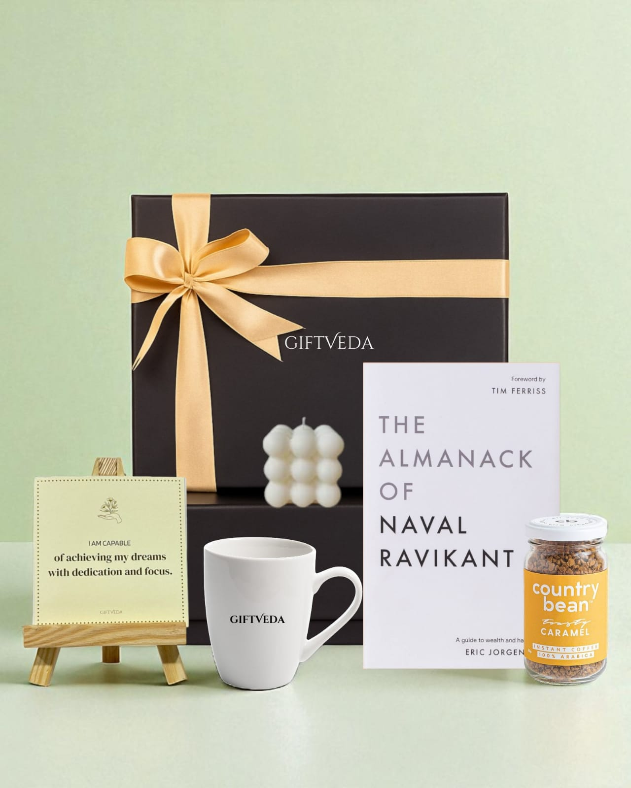
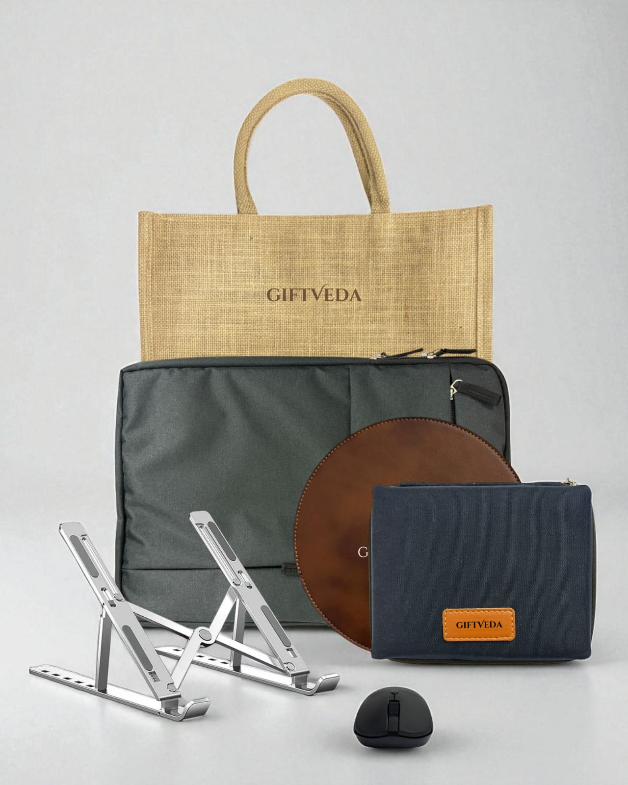
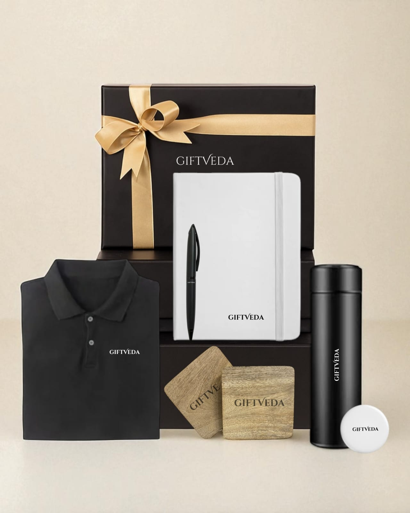

In the fast-paced world of business, recognizing achievements and building strong relationships is key to success. Personalized corporate gifts have emerged as a thoughtful way to celebrate milestones, whether it's an employee's work anniversary, a client's project completion, or a team's collective victory. These custom business gifts go beyond generic items, incorporating elements like names, company logos, or specific messages to create a lasting impact. As companies increasingly focus on employee appreciation and client retention, understanding the role of tailored gifts can help foster a positive corporate culture.
The Power of Personalization in Corporate Gifting
Personalization transforms ordinary items into meaningful tokens. Imagine a branded notebook engraved with an employee's name or a custom mug featuring a motivational quote tied to a recent promotion. Such gestures show that time and effort were invested in selecting the gift, making the recipient feel valued. In today's competitive market, where remote work and digital interactions are common, these physical reminders of appreciation help bridge the gap and strengthen bonds.
Companies that prioritize thoughtful gifting often see tangible results in engagement and loyalty. Personalized items enhance brand recall and encourage positive word-of-mouth, strengthening professional relationships.
Benefits of Personalized Corporate Gifts
Investing in custom corporate gifts offers numerous advantages for businesses. They boost employee morale by acknowledging individual contributions, leading to higher job satisfaction and productivity. Studies show that gifts can increase employee productivity by 14%, and organizations with engaged employees often outperform competitors significantly.
For clients, these gifts strengthen relationships and foster loyalty, potentially leading to long-term partnerships. Branded promotional items also serve as subtle marketing tools, increasing brand awareness without overt sales pitches.
Personalized gifts reflect thoughtfulness, setting your business apart in a sea of generic options. By tailoring items to the recipient's preferences, you create memorable experiences that resonate on a personal level.
Celebrating Key Milestones with Tailored Gifts
Employee Onboarding and Welcome: Custom desk essentials like engraved pens, notebooks, or branded apparel help new hires feel valued from day one.
Work Anniversaries: Engraved plaques, custom watches, or personalized tech accessories can honor years of service meaningfully.
Promotions and Achievements: A custom leather portfolio or a branded gourmet gift hamper can celebrate professional growth effectively.
Retirements and Farewells: Personalized photo albums or engraved travel accessories symbolize appreciation and new beginnings.
Client Milestones: Eco-friendly products, reusable bottles, or wellness kits demonstrate care and strengthen business relationships.
Emerging Trends in Personalized Corporate Gifting for 2026
Hyper-personalization driven by AI is enabling deeply tailored gift selections. Sustainability remains a priority, with eco-friendly and ethically sourced materials gaining popularity. Wellness-focused gifts addressing mental health needs are increasingly relevant in modern workplaces.
Smart gadgets with custom engravings, artisanal handcrafted products, and inclusive gifting options that cater to diverse teams are shaping the future of corporate gifting strategies.
Conclusion
Personalized corporate gifts are more than just items; they are tools for building lasting connections and celebrating success. By choosing tailored options for every milestone, companies can enhance morale, loyalty, and brand presence. Thoughtfulness and relevance remain the foundation of impactful corporate gifting.